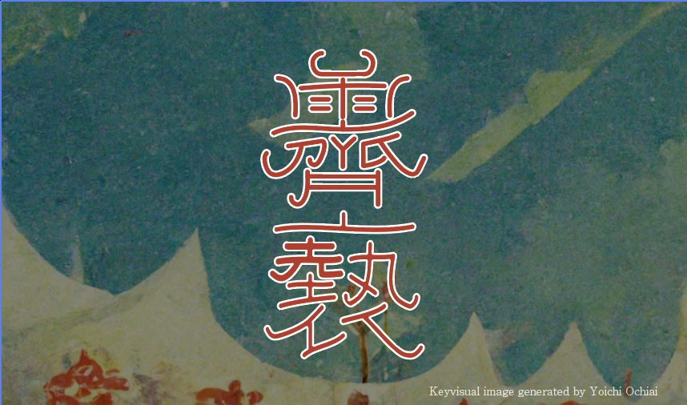

祝祭と霽れ
独自書体 霽褻
本展示会のロゴタイプに使用している独自書体「霽褻（ｾｲｾﾂ）」
霽れと褻という日本の伝統的な世界観を体現するために、隷書体という素朴で落ち着いた雰囲気の書体をベースに、「華」と呼ばれる、はねはらいの装飾を独自に付加することで、この世界観を表現している。また、本書体は日本神話に登場する神々の名前に使用される漢字のみを扱うことができ、日本の伝統的な世界観を、身近な文化である「神社」というきっかけから知ることができる。
霽れと褻という日本の伝統的な世界観を体現するために、隷書体という素朴で落ち着いた雰囲気の書体をベースに、「華」と呼ばれる、はねはらいの装飾を独自に付加することで、この世界観を表現している。また、本書体は日本神話に登場する神々の名前に使用される漢字のみを扱うことができ、日本の伝統的な世界観を、身近な文化である「神社」というきっかけから知ることができる。